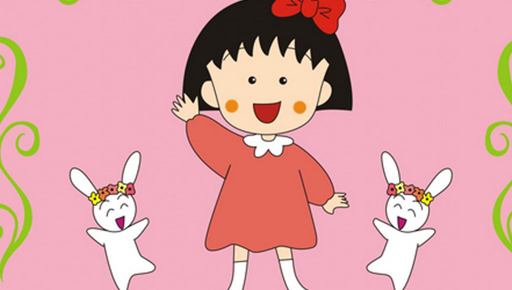

角色经历

在TV版动画里第二天就是母亲节了，小丸子想给妈妈准备礼物，但她全部的财产也才250日元，想找姐姐借却遭到了拒绝。无计可施的小丸子只好带上这笔钱来到百货店，看到很中意的东西，但那高昂的价格却把小丸子吓了一大跳。发现绝对买不起店里的任何东西，小丸子羞愧地低着头打算走出百货店。 此时一个亲切的声音在身后响起，她询问小丸子是不是在找什么东西，原来是百货店的店员小姐，小丸子不由自主把自己的烦恼告诉了对方，并紧紧地握着手上仅有的250日元，店员小姐微笑着告诉小丸子，只要在这里帮个忙打打小工就能赚到一个礼物，最后小丸子终于买到了自己想要的礼物，回到家心跳加速地准备把它送给妈妈。结果回去以后，不小心说漏了嘴，有一个一样的，小丸子很伤心，最后妈妈安慰她，两人快乐笑起来。
在TV版动画里星期天是小丸子的生日了，为了邀请朋友们到家里来开生日会，小丸子正在努力打扫房间。但是小丸子的目标是全班25个朋友都想邀请，妈妈则觉得小孩子的生日何必如此铺张，命令她把人数减到四个。虽然很不高兴，但却没办法违背妈妈的意志，于是小丸子开始认真地思考究竟邀请哪四个朋友。就算到学校也拿着笔记本在努力想。 可是小丸子还没有把自己想要邀请的人的名单告诉妈妈，妈妈却已经擅自帮忙邀请了一个的。原来这天小丸子的妈妈去购物的途中遇上了丸尾同学的妈妈，于是把小丸子生日的事情告诉了对方，两边的母亲更约好届时邀请丸尾同学来小丸子的生日会。 看着露出不满表情的小丸子，妈妈让步说到时候她可以邀请五个人来。但这根本不是问题的重点所在，小丸子还在烦恼究竟要邀请另外哪四个人。
在剧场版动画《樱桃小丸子：来自意大利的少年》里来自英国、中国、美国等六个国家的小孩子将拜访樱桃小丸子的家乡清水市，小丸子将会和他们一起去东京和大阪。其中，来自意大利的一位小正太安德烈喜欢上了小丸子并向她表白。不仅有来自异国文化的冲撞笑料，最重点的莫过于小丸子忽然被意大利美少年告白。一向走脱力系路线的丸子同学也忽然变得羞涩起来，在与意大利少年的交往中不断了解到少年成长背后的家庭故事，小丸子与少年也逐渐交心，可是，少年毕竟不属于日本，终有离别的日子，单身狗小丸子刚刚恋爱，就失恋了。
在剧场版《樱桃小丸子：我喜欢的歌》里，同学们根据自己喜欢的歌曲编出一副图画来。小丸子在去静冈县的外婆家途中，遇到了帮路人素描打工的大姐姐，并成为了忘年交。在大姐姐对歌曲故事的讲述下，小丸子也画出了得奖的作品，并且还"童言无忌"的一番话感动了大姐姐，让大姐姐重新权衡了与北海道大哥哥的恋情和自己的梦想哪个更重要的故事